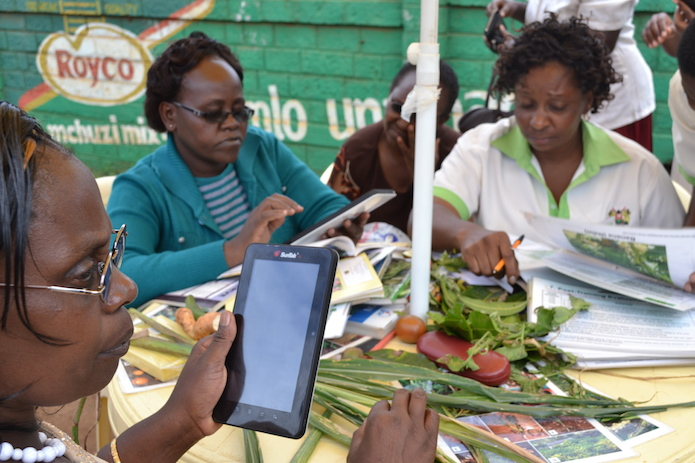

ODI Futures: Who owns open agricultural data?
In the run-up to our ODI Futures event on Agriculture in partnership with Defra, we asked CABI’s Martin Parr to share his thoughts on how data can be used in agriculture, along with the benefits, and challenges, that come with opening it up
 Plantwise clinic doctor gives advice to a farmer and delivers it by SMS. Credit Holly Wright. Copyright CABI
CABI is a nonprofit scientific research, publishing and global development organisation. CABI runs the global Plantwise programme, which works to help farmers keep a greater yield of what they grow, with improved knowledge of pests and disease outbreaks.
Launched in 2011 and working with partners in diverse areas from Bolivia to Uganda, CABI’s Plantwise programme establishes and supports sustainable networks of plant clinics – run by trained ‘Plant Doctors’ – where farmers can find practical plant health advice.
The programme has developed a knowledge bank to share Good Agricultural Practice and a very high level of anonymised data about incidences of plant pests and diseases.
Success of the CABI Plantwise programme is measured by the extent to which it provides advice to farmers, agencies and governments in tackling pests. Increasingly it’s moving away from solely giving advice at a local level, to also understanding national, regional and global trends.
Through our partnerships with governments, extension workers, NGOs and others on the ground, we’ve collected data through thousands of recorded consultations with farmers. To date, we’ve documented 150,000 cases globally in 34 countries which highlight the everyday concerns of small- and medium-sized farms around the world.
With this rich database, for the first time we have the ability to create a sentinel alert system that allows us to mobilise forces to tackle emerging diseases. We are currently looking for a pilot country to roll out this system soon, but our next challenge is to open this data to others for more people to be able to build solutions from it, building trust as we go.
As a global community, we face the wider challenge of creating capacity around the world to collect, manage, clean, label and interpret data, and to do so in a cost-effective and sustainable manner with collaborative national adaption and funding schemes.
How tablet computers help plant doctors collect quicker cleaner data
One solution Plantwise is working on is a programme to help collect and disseminate plant health data in Kenya. Tablets were introduced in an ‘e-plant clinic’ pilot programme for plant doctors to use to complete an electronic version of a farmer prescription form, send recommendations via SMS to farmers, and have access to a wealth of electronic plant health materials.
Sixty plant doctors from 30 clinics collectively submitted 4,000 prescription forms over 12 months. The initial findings suggest that there are substantial advantages to integrating tablets into clinics. They helped improve data speed (cutting formal reporting time from around 100 days to 20), quality (by using controlled vocabularies) and value (potentially over 20% cheaper than old paper forms and reaching three times the farmers on average per clinic than previous distribution methods), the wealth of resources available for decision making, and the opportunities plant doctors had to support each other through chat groups.
Ownership of data
While our Plantwise programme excels in managing the data we obtain through bilateral agreements with extension workers, NGOs and other partners on the ground, we don’t have ownership of this data.
It would be extremely valuable to have a mandate to share it when, for example, our Plant Doctor clinics are notified of disease outbreaks in East Africa.
Currently, valuable opportunities are lost due to a frustrating time lag which sees a disease spread rapidly before the information is communicated formally in publications, or reported under the international reporting requirements of the International Plant Protection Convention. This spread can happen before key researchers working on the disease in the country are notified, or regional extension bodies, input suppliers and other farmers nearby.
A new plant disease spreads across East Africa and is seen at clinics a long time before it is officially reported. Copyright CABI
The solution is one we are now working to solve – and it’s a tricky one. Incentives are needed rather than obligations for farmers, organisations and governments to share their knowledge about where diseases are occurring.
At CABI, we aim to assist this process by engaging stakeholders in the data to broaden the circle of trust and move us along the spectrum of closed to open data together. We believe success will come in the form of better strategic overviews for governments and investors, as well as quicker reporting, while agri-input suppliers can deliver timely new services responding to emerging diseases as they occur, not when they have run out of control.
To make this happen we need to move towards a better understanding of, and models for, data ownership and stewardship, to help us build a data rights charter for agriculture. We are open to collaborative ideas from new and future GODAN partners and ODI Members to help us with these solutions.
CABI is known for a range of products and services for agriculture and the environment including CAB Abstracts, Plantwise, and for hosting the Secretariat of the Global Open Data for Agriculture and Nutrition (GODAN) Initiative. For 100 years it has been a manager of agricultural information and data, and was an early adopter of open data when it built the R4D portal for DfID.
In 2013, CABI & Plantwise won an ODI award for Social Impact in recognition of the information spread by our Plant Doctor Clinics.
Martin Parr is a Head of Open Data at CABI at the ODI. Follow Martin on Twitter.
If you have ideas or experience in open data that you'd like to share, pitch us a blog or tweet us at or tweet us at @ODIHQ.